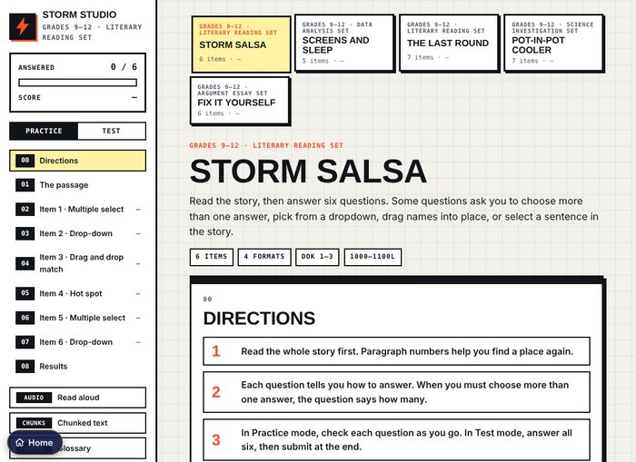
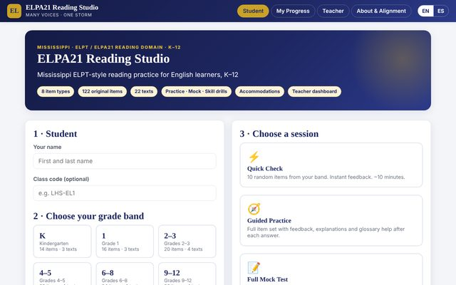
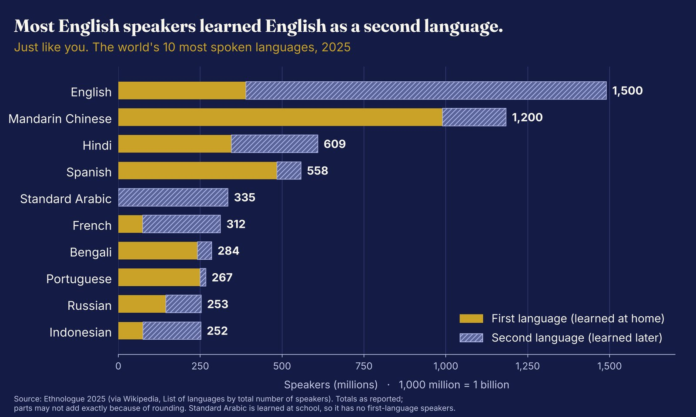
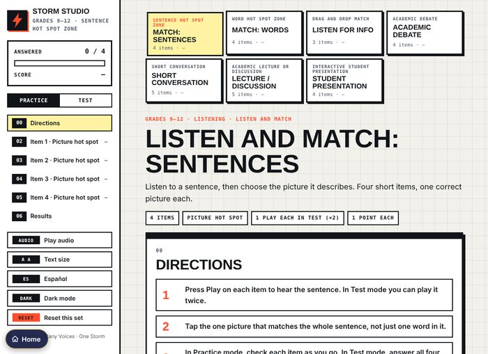
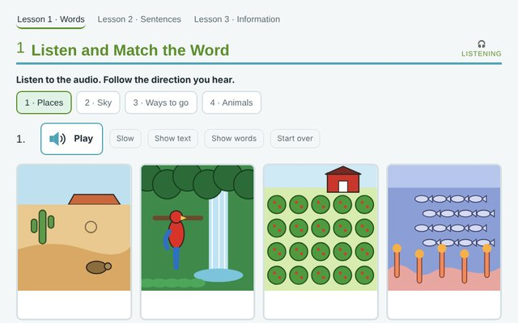
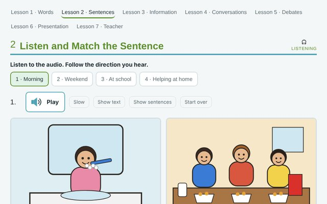
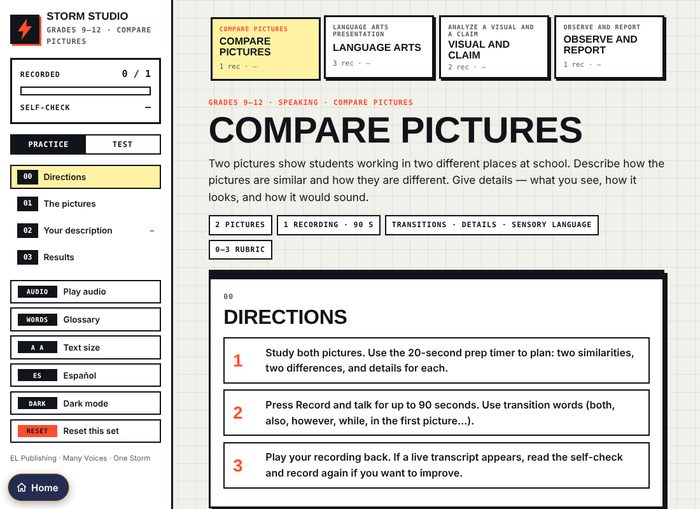
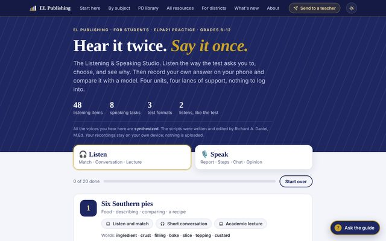
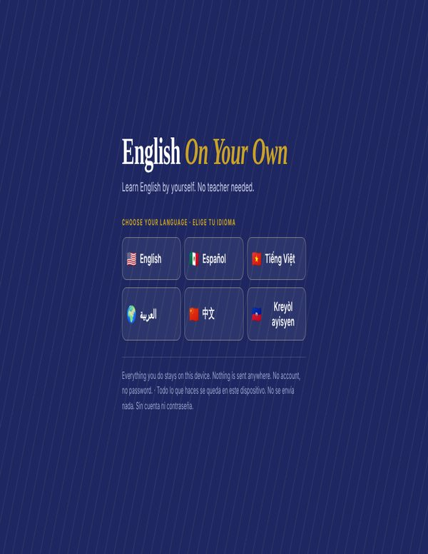
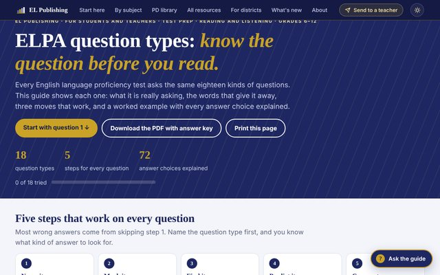

Every ELPT practice tool for students in one place, by domain. Reading: Storm Reading Sets (five interactive sets), the ELPA21 Reading Studio under mock-test conditions, and Read the Graph (a 20-minute graph-reading lesson on the world’s most spoken languages). Writing: Storm Writing Sets (the five ELPA21 writing tasks with live self-checks). Listening: Storm Listening Sets (seven task types, a voice per speaker) and Listening Practice Sets 1 and 2. Speaking: Storm Speaking Sets (record, replay, self-check) and the Listening & Speaking Studio. Before the window: Dress Rehearsal, the device check (headset, microphone, typing, scrolling, flag-and-review). All four domains: English On Your Own (a full form with every task type), the student Task Practice packet and the ELPA Question Types guide. Every Storm set has a teacher key at #key.
Reading
Read a passage, a table or an investigation, then answer the way the test asks.



Writing
The five writing tasks, with a self-check that updates as the student types.
Listening
Hear it, then tap, drag or choose. Each recording plays twice in Test mode.



Speaking
Record an answer, play it back, compare it with a model.


Before the window
Rehearse the device itself: headset, microphone, typing, scrolling and review.
All four domains
The full form, the printed packet and the guide to every question type.

